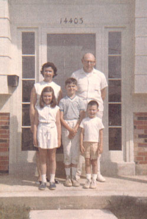

Bob, Kate (his mother), Joel (his son), & Cara (his grandaughter)
| Bob Craig was born on the 11th of December, 1923. He was the eldest among four children. He designed the interiors of stores for large chains on the east coast and traveled quite a lot. |
|
|
 |
Bob met Ginny Brown and they where married in St. John the Evangelist Church in Syracuse on June 30, 1951. Together they had three children (see photo at left). They moved a lot, making homes in Albany, NY, Rochester, NY, Linwood, NJ, Silver Spring, MD, Rockville, MD, and finally Mount Airy, MD. |
| The house in Mount Airy Bob designed himself as their retirement home. He died December 15th, 1981 of pancreatic cancer. |
Bob, Kate (his mother), Joel (his son), & Cara (his grandaughter) |